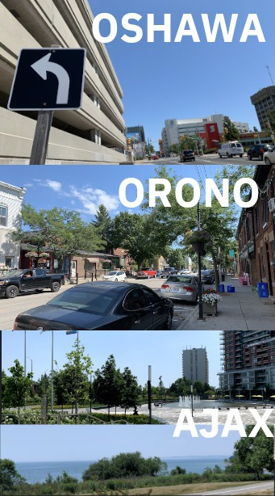
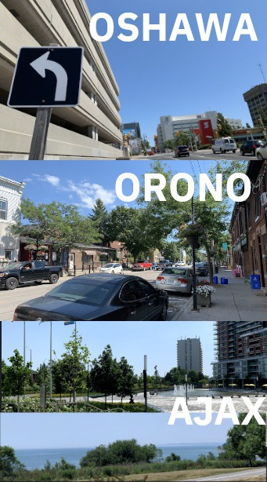

Well, we’ve been to all 13 downtowns in Durham (and some more, too!). So, how was it? Well, it turns out Durham has a lot to offer. From the tranquil shores of Lakes Simcoe and Scugog in the north to the bustling urban core of Oshawa and the quiet valley of Pickering Village (in Ajax) to the south, there’s lots to see and so much variety!
There were some surprises, too. Like the fact that almost every single town we came across was a mill town (even Ajax, if you count Pickering Village). Or the eclectic history of downtown Whitby and its surprising selection of nice (international) restaurants. Or the fact that downtown Ajax is basically a mall and Beaverton has a beautiful pier.
So what’s worth checking out? What are my favourites? The shining examples of downtowns in Durham?
Normally, I don’t believe in doing rankings because they’re gimmicky and don’t wholly capture the nuances of something as complicated as a city’s downtown,* but I do like picking my top choices and my bottom choices. With that in mind, here are my favourites, the ones that I don’t really need to visit again, and some special ones!
Top Three
I’d like to visit these again!
Port Perry
The northern counterpart to Whitby, Port Perry is an absolutely gorgeous downtown right next to Lake Scugog with all the shops and amenities a downtown should have. A favourite vacation spot growing up, Port Perry does not disappoint and is excellent to stroll around.
Beaverton
The northernmost downtown of Durham, Beaverton reminds me of a quiet Port Perry. However, its real “attractiveness” (for lack of a better word) comes from its historic trail leading west out of the downtown that takes you through the mill history of the town, the railroad, and culminates with an expansive view of Lake Simcoe.§ Check out the pier!
Whitby
The diversity of Oshawa, the mood of Port Perry.
Whitby is a surprisingly exciting downtown with lots to check out like murals painted on the sides of buildings, weird and sad stories on historical plaques, a magnificent library, and amazing restaurants.
Bottom Three
I’d be OK not revisiting these for a while. 

Oshawa
Starting with the fact that they demolished their historic mill and replaced it with a parking garage with a plaque, Oshawa is better around the downtown, not in it. While Oshawa is "the city" in Durham and so its downtown has restaurant types that can’t be found elsewhere locally (like Donair,¶ Greek, or Ramen), it’s best to go directly there and spend time elsewhere, like at the botanical gardens, the McLaughlin Gallery, or Parkwood.
Orono†
There’s not much here. It’s almost not worth the trip unless you’re really into antiques (it’s really their thing), you’re in the area, or you like wandering along babbling creeks (they have a nice trail).
Ajax
This one is not like the others because while it’s not great, it is getting better, and you can see that. Pat Bayly Square looks like it will be very nice and fill in once the pandemic’s over, but for now there’s not much there. The waterfront is much better and worth checking out.
Special Mentions
Not necessarily downtowns (or from Durham), but they have some neat things going on that’s worth a look.Parkwood
This is where Oshawa really shines. This is not a downtown, but it is so worth the visit. Once the home of the venerable Sam McLaughlin, it has become Oshawa’s “High Park” after he left it to the hospital next door. A national historic site and home to some unique architecture, you may recognize Parkwood as a generic older mansion as it’s often used for filming. Today, visitors can wander the impeccable gardens for free and pretend they’re taking their afternoon constitutional in their very own park.
Uxbridge
Trains and a Taj Mahal!
Downtown Uxbridge is fine, although not special enough to be a favourite (it’s the trail capital of Canada, so that’s OK, anyway)… but it has trains! And a tiny Taj Mahal! I mean, isn’t that cool! :D
Pickering
Pickering has a downtown, although it’s a private mall. This will be changing, though, and it will be interesting to see how the transformation happens. (Currently they’re demolishing the late Sears.) At the end, we should have something like Markham or Ajax, as a public/private downtown space. Neat.
Meanwhile, we get a lovely park (inclu. art!) and city hall, a fancy mall, a neat pedestrian bridge, and a GO station with split bus terminal. It’s all nice but remote, and completely unlike any of the others.
Markham
Downtown Markham is also unique in this collection in that is is a brand-new and completely constructed. It’s also not done yet, but what’s there is really nice (excluding the surrounding neighbourhood which is a dystopian cookie-cutter landscape. Sorry if you live there.)
The buildings are new and shiny and use the cutting-edge old technique of mixed-use residential to keep the place populated and lively (once the pandemic’s over)! Once the university goes in, it will be really interesting to see if this works out. I hope that the downtown makes the Markham campus feel less remote than Keele.⁋